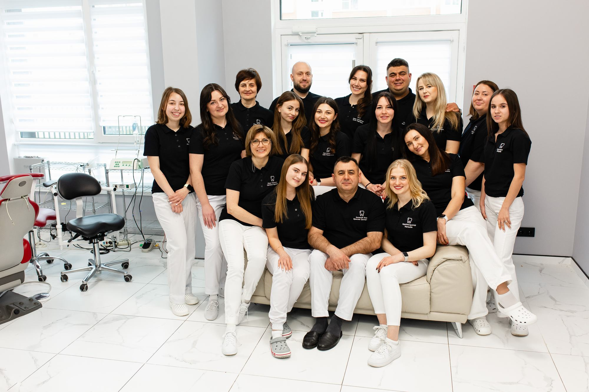

A family clinic
The Prydatko family of dentists founded the clinic and still works here every day. Many patients have come with their whole family for years.
Sladent is the Prydatko family dental clinic at 8 Zluky Avenue in Ternopil. One patient has seen Dr. Yaroslav Prydatko since the 1990s.

Prydatko Family Dentistry was founded in 2008 by Dr. Yaroslav Prydatko. Whole families have come here from the start, and many still do.
The clinic grew and so did the team. Today Dr. Yaroslav Prydatko works with Dr. Yurii Prydatko and Dr. Svitlana Prydatko, other dentists, an orthodontist, assistants, nurses and administrators.
Sladent is the modern name of the same family clinic. The same people and the same care.
The Prydatko family of dentists founded the clinic and still works here every day. Many patients have come with their whole family for years.
Before treatment the doctor explains what will be done and why, and afterwards tells you how to care for your teeth.
We treat children from age three and take our time. While you wait, there are games and cartoons about Zubyk the tooth.
Fillings, hygiene, aesthetics, orthodontics, surgery and implants. No need to look for different doctors around the city.
We are open until 8 pm on weekdays and until 3 pm on Saturday, so you can come after work.
Doctors, assistants, nurses and administrators who know patients by name.
Trusted by our whole family for more than a decade. Sincerely recommend.
Call us or leave a request on the site and our administrator will find a time that suits you.